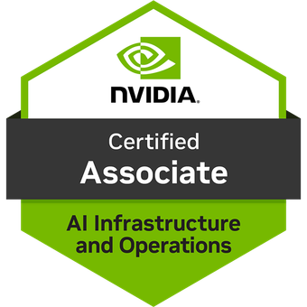

Languages & Frameworks
- JavaScript, TypeScript, Java, Python, SQL
- React.js, Node.js, Express
- HTML/CSS, RESTful APIs
Software Engineer I @ The Home Depot
M.S. Computer Science · ML @ Georgia Tech
I'm a Software Engineer I on The Home Depot's core web team, an M.S. Computer Science student at Georgia Tech specializing in Machine Learning, and the founder of Dynamic Reasoning LLC. My focus is production AI, full-stack web, and the engineering it takes to make both hold up in front of real users.
Working full-time as a Software Engineer I at The Home Depot, building Dynamic Reasoning LLC alongside it, and pursuing my M.S. in Computer Science at Georgia Tech with a Machine Learning specialization.
I thrive on delivering polished user experiences grounded in solid engineering. I joined The Home Depot full-time as a Software Engineer I after graduating from Rowan University a year early, and I'm continuing my education at Georgia Tech in their M.S. Computer Science program with a Machine Learning specialization.
On the THD core web team I ship customer-facing React, React Query, and GraphQL on homedepot.com. Outside of that role I run Dynamic Reasoning LLC, whose flagship engagement is Who's Brew — a live multi-vendor specialty coffee marketplace. The company and product are theirs; I'm the sole engineer who built the platform end-to-end and continues to maintain it (real payments, multi-tenant data, LLM-powered search and recommendations).
Outside of all that you'll find me refining my skills, exploring applied AI patterns, and shipping projects that take an idea from sketch to something real users can actually use.
Dynamic Reasoning LLC
Dynamic Reasoning is the consulting practice I run alongside my role at The Home Depot. I take on a small number of engagements at a time — multi-vendor commerce platforms, applied LLM features, computer vision pipelines, and ML model deployment. The flagship engagement is Who's Brew, where I'm the sole engineer behind a live specialty coffee marketplace.
For client work, see Independent Practice above.
Windows desktop application using computer vision and AI to digitize whiteboard content, outputting clean vector graphics with direct OneNote integration via Microsoft Graph API.
AlphaZero-inspired chess engine using a ResNet neural network and Monte Carlo Tree Search, pre-trained on millions of Lichess games then refined through self-play reinforcement learning. Runs as a lightweight REST API with ONNX inference on CPU.
Full-stack movie discovery platform with swipe-based interface, Google OAuth authentication, and AI-powered recommendations using Gemini API for personalized film suggestions.
Static study platform that transforms JSON files into interactive learning experiences with notes, flashcards, quizzes, games, and integrated PDF viewing—no backend required.
Comprehensive AI engineering program covering machine learning, deep learning, and generative AI applications. Projects include sentiment analysis with Flask, image captioning with generative AI, ChatGPT-like applications with open source LLMs, voice assistants with GPT APIs and Watson, AI meeting companion with Llama, and "Babel Fish" universal language translator with Flan and Gradio.
Expertise in planning and managing Azure AI solutions, implementing generative AI and agentic solutions, computer vision, natural language processing, and knowledge mining. Demonstrated ability to design and deploy enterprise-scale AI applications using Azure's cognitive services and machine learning capabilities.

Specialized knowledge in accelerated computing use cases, AI/ML/deep learning fundamentals, GPU architecture, and NVIDIA's software suite. Covers infrastructure and operational considerations for adopting and managing enterprise NVIDIA AI solutions with focus on GPU-accelerated computing environments.
Graduate study in machine learning with focus on deep learning, natural language processing, and applied AI systems. Pursued alongside my full-time Software Engineer I role at The Home Depot.
College of Science & Mathematics · Graduated one year early. Coursework in Software Engineering, Design & Analysis of Algorithms, Information Visualization, Cyber Security Fundamentals, Data Structures, Object-Oriented Programming, Computer Organization, Calculus I/II, Linear Algebra, and Discrete Mathematics.
STEM-focused curriculum with Dual Enrollment Data Structures with FDU, AP Computer Science, Honors Calculus, etc.
Software Engineering Manager • The Home Depot
LinkedIn Recommendation • July 27, 2024
"Nick was excellent during his internship time with the Major Appliance Browse Team at The Home Depot. He took initiative in learning our domains and infrastructure. He collaborated with multiple engineers and he was willing to innovate as he went. I would recommend Nick to take on a developer role and continue to grow and be an asset."
View LinkedIn Profile →Software Engineer II • The Home Depot
LinkedIn Recommendation • July 28, 2025
"I had the pleasure of mentoring Nicholas during his internship, and he quickly stood out as a curious, fast learner who consistently exceeded expectations. He tackled new challenges with enthusiasm and picked up complex concepts with ease. Nicholas was also a strong team player, collaborating effectively with his peers and playing a key role in delivering an outstanding final project. His work ethic, eagerness to learn, and ability to contribute meaningfully made a lasting impression. I highly recommend him for any future opportunity."
View LinkedIn Profile →Software Engineer II • The Home Depot
LinkedIn Recommendation • August 4, 2025
"I have had the pleasure of mentoring Nicholas two times during his internships. Across those two internships I have witnessed his growth as an upcoming software engineer and I believe in his potential to reach great heights. He jumps into problems quickly and knows when to reach out with questions. Nick would be an asset to any team that he is a part of."
View LinkedIn Profile →Explore the detailed resume for expanded project summaries, toolchains, and prior work history.
Open Full ResumeI'm always excited to talk about software engineering, AI, ML, and opportunities to deliver meaningful user experiences. Reach out and let's collaborate.